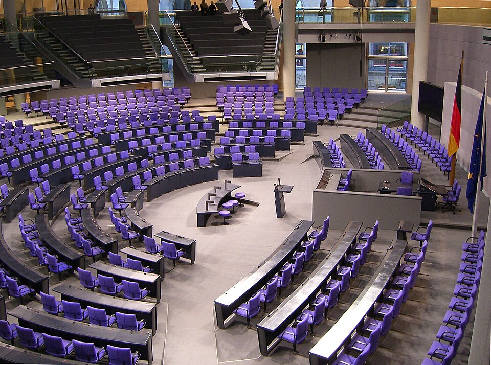

EreignisHaushalt 2027
Die Haushaltslücke
Im Haushalt 2027 fehlen über 30 Milliarden Euro. Als Finanzminister muss die SPD einen Weg finden, die Lücke zu schließen.

Die Steuereinnahmen bleiben hinter den Erwartungen zurück, Zinsen und Verteidigungsausgaben steigen. Für den Haushalt 2027 fehlen über 30 Milliarden Euro, und als Finanzminister muss die SPD einen Weg finden, die Lücke zu schließen. Die Union lehnt Steuererhöhungen ab und verlangt Einschnitte beim Sozialstaat.
Wie schließt die SPD die Lücke?
- 1Bei Bürgergeld und Rentenzuschüssen kürzen.
- 2Einen Krisenbeitrag für sehr hohe Einkommen und Vermögen durchsetzen.
- 3Die Schuldenbremse über eine Notlage aussetzen.Ohne echte Notlage würde Karlsruhe das kassieren, wie 2023 den Nachtragshaushalt.
- 4Klimaschädliche Subventionen streichen.